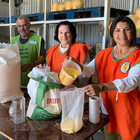

La historia del Banco de Alimentos
-

1967
Estados Unidos
Se fundó el primer banco de alimentos en Phoenix, Arizona, liderado por John van Hengel, un hombre de negocios y filántropo.
-

2000
Buenos Aires
En Argentina, el primer Banco de Alimentos se fundó en Buenos Aires en el año 2000, gracias
al trabajo de un grupo de voluntarios preocupados por la problemática del hambre en el país y por los altos niveles de desperdicio de alimentos. Posteriormente, se crearon otros bancos de alimentos en distintos puntos del país, como en Córdoba y en Rosario. -

2006
Río Cuarto
Un grupo de personas busca dar respuesta a la problemática del hambre y la pobreza en la ciudad.
LA FUNDACIÓN DESDE CERCA
El trabajo arduo para reducir el desperdicio de alimentos y distribuirlos a las personas más necesitadas de la ciudad.
El trabajo que realiza la Fundación Banco de Alimentos de Río Cuarto no solo busca reducir el hambre y la pobreza en la ciudad, sino también promover la educación y la conciencia sobre el desperdicio de alimentos y la importancia de la solidaridad y el trabajo colectivo. A través de diferentes acciones, la organización busca concientizar a la población sobre la necesidad de prevenir el desperdicio de alimentos y la importancia de donar aquellos alimentos que pueden ser aprovechados por las personas más necesitadas.
Esta organización tiene como objetivos principales, reducir el desperdicio de alimentos y distribuirlos a las personas más necesitadas de la ciudad. Para ello, han establecido una estructura sólida de recolección, clasificación, almacenamiento y distribución de alimentos que permite llevar alimentos de calidad y en buenas condiciones a las personas más necesitadas.
La pobreza y el hambre son dos problemáticas que afectan a una importante parte de la población de Río Cuarto, en Argentina. Y para combatirlas, la Fundación Banco de Alimentos de Río Cuarto ha venido realizando un destacable trabajo. su labor se vuelve fundamental, no solo en la lucha contra el hambre y la pobreza, sino también en la promoción de valores como la solidaridad y la conciencia.